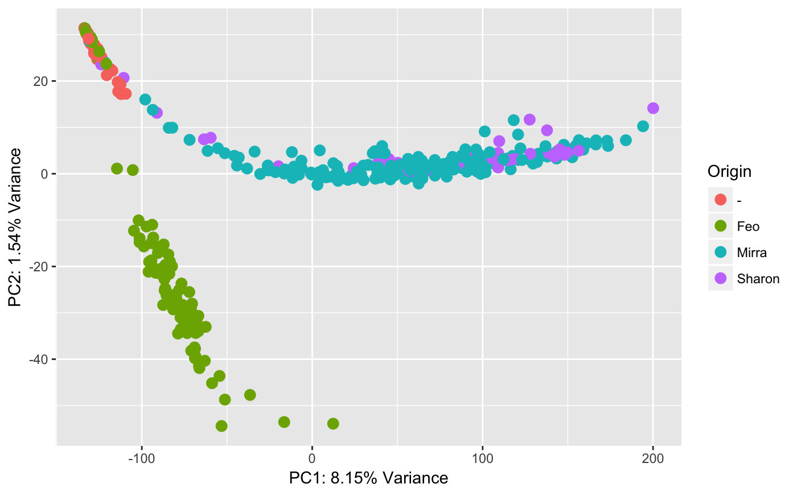

Introduction
This vignette covers applying Principal Component Analysis (PCA) to an example DGE dataset from a real experiment at the LSP. As we’ll see, the largest amount of effort goes into make the data tidy. Once the data is in a tidy format, applying PCA requires only two lines of code: one to compute the decomposition, and another to project the data onto the first k components.
We begin by loading the necessary libraries. If you followed installation instructions on the main page, all these libraries should have been automatically installed in your environment.
library( tidyverse )
library( magrittr )
library( broom )Loading and tidying the data
The data for this workflow is hosted on Synapse. We can download it to a local directory by running
workflows::getData( "dge-pca" )which will request you to sign in to Synapse (if this is the first time) and download the data to data/dge-pca on your current path. Feel free to open the files in a text editor to get a bit familiar with them.
For the rest of the vignette, we will follow tidy data conventions, as introduced by Hadley Wickham. Specifically, we need to arrange our data into a format that places each sample into a row with columns corresponding to individual properties, such as expression of a particular gene, or the drug that the sample was treated with.
We begin by loading expression data. Note that by default count tables arrange samples in columns and genes in rows. Thus, our processing steps will consist of a) loading the raw data; b) applying a log2 transform; c) transposing the matrix to place samples into rows; and d) fixing sample names. The last step is necessary because sample names between expression and metadata files are mismatched, and we will need them to match exactly when we merge the two data frames later.
fnX <- "data/dge-pca/M3.unq.refseq.umi.dat"
X <- read.delim( fnX, row.names=1 ) %>% ## Load the raw data
add(1) %>% log2() %>% ## Apply log transform: log2( x + 1 )
t() %>% as.data.frame() %>% ## Transpose to samples-in-row format
rownames_to_column( "SampleID" ) %>% ## Place sample names into their own column
mutate( SampleID = str_split( SampleID, "_", ## Fix the names: e.g., T384s1_A1 -> A1
simplify=TRUE )[,2] )Depending on how your own data looks, you may or may not need all of these steps. A good exercise is to run a portion of the code and examine the output of each step.
Let’s take a look at the first few rows and columns of the data frame, to verify that things look correctly.
X[1:3,1:5]## SampleID A1BG A1BG-AS1 A1CF A2M
## 1 A1 0.000000 0 0 0.000000
## 2 A2 1.584963 0 0 1.584963
## 3 A3 1.000000 0 0 1.584963Next, we load the metadata. It is already in the format that contains samples in rows. However, we still need to compose sample IDs to match what is in the expression data frame X. We would also like to simplify the column names to avoid overly verbose code. (Note that the original column names can always be saved to another variable and used as visual elements in subsequent plotting.) Finally, because the metadata was stitched from multiple sources, the Drug column contains multiple entries for the same compounds in mismatched capitalization. For example, it contains “dmso” and “DMSO”, “Sorafenib” and “sorafenib”. We consolidate the discrepancies by making each drug name capitalized, except DMSO, which is treated as a special case.
fnY <- "data/dge-pca/FDA_DGE_metadata.csv"
Y <- read_csv( fnY ) %>% ## Load the raw data
mutate( SampleID = str_c( Row, Column ) ) %>% ## Compose the sample IDs from Row, Column
select( SampleID, Origin = `Sample Origonator`, ## Select the variables of interest and
Drug = `Drug treatment or Condition`, ## rename them to shorter tags
Time = `Time of Treatment (Days)`,
Concentration = `Drug Concentration (uM)` ) %>%
mutate( Drug = str_to_title(Drug) ) %>% ## Consolidate capitalization of drug names
mutate( Drug = ifelse( Drug == "Dmso", "DMSO", Drug ) )The goal of using a “messy” dataset is to demonstrate that real data often contains many artifacts and typos and is almost never ready to be fed directly to analysis scripts. In many cases, a large portion of your time can be tied up with wrangling and tidying datasets, so it’s important to collect data with these wrangling steps in mind. Be kind to the future you!
Once again, we verify the first few rows and columns of the metadata frame to make sure things look as expected.
Y[1:3,]## # A tibble: 3 x 5
## SampleID Origin Drug Time Concentration
## <chr> <chr> <chr> <chr> <chr>
## 1 A1 Mirra Afatinib 1 1
## 2 A2 Mirra Afatinib 5 3.16
## 3 A3 Mirra Afatinib 1 3.16Now that we have both expression and metadata in a tidy format, we can combine everything into a single data frame, using the now-matching sample IDs.
XY <- inner_join( Y, X )## Joining, by = "SampleID"Note that by passing Y as the first argument, the join operation will place its columns to the left of X.
XY[1:3,1:8]## # A tibble: 3 x 8
## SampleID Origin Drug Time Concentration A1BG `A1BG-AS1` A1CF
## <chr> <chr> <chr> <chr> <chr> <dbl> <dbl> <dbl>
## 1 A1 Mirra Afatinib 1 1 0 0 0
## 2 A2 Mirra Afatinib 5 3.16 1.58 0 0
## 3 A3 Mirra Afatinib 1 3.16 1.00 0 0Principal Components Analysis
We would like to perform PCA on all the “gene” columns in our joint data frame. To say it another way, we would like to exclude columns SampleID through Concentration, which is accomplished through a simple select call. After performing PCA, we augment the original data matrix with the sample projections onto each principal component. The final results matrix is then composed by selecting columns SampleID through Concentration, and projections onto the first two principal components
PCA <- select( XY, -(SampleID:Concentration) ) %>% prcomp()
RR <- augment( PCA, XY ) %>% select( SampleID:Concentration, .fittedPC1, .fittedPC2 )
RR[1:3,]## SampleID Origin Drug Time Concentration .fittedPC1 .fittedPC2
## 1 A1 Mirra Afatinib 1 1 -30.50101 -0.05008641
## 2 A2 Mirra Afatinib 5 3.16 82.32823 3.62423011
## 3 A3 Mirra Afatinib 1 3.16 48.21466 -0.37240636Plotting the results
It is often useful to present the amount of variance captured by each principal component. This can be retrieved from the PCA object computed above. We scale the variance to be percent of the total and wrap it inside some text to be displayed as the axis labels. Because we’re going to be rerunning PCA multiple times, the underlying % variance explained will change, and the labels will need to be re-generated. We wrap the following code inside a function to make our lives easier.
mylabels <- function( i, j )
{
pcvar <- PCA$sdev / sum( PCA$sdev ) * 100
xlabel <- str_c( "PC", i, ": ", round( pcvar[i], 2 ), "% Variance" )
ylabel <- str_c( "PC", j, ": ", round( pcvar[j], 2 ), "% Variance" )
labs( x = xlabel, y = ylabel )
}We are now ready to produce the PCA plot. The plot below is colored by the Origin attribute to investigate the presence of potential batch effects.
ggplot( RR, aes( x = .fittedPC1, y = .fittedPC2, color = Origin ) ) +
geom_point( size = 3 ) + mylabels(1,2)
The plot above shows a strong batch effect between Feo samples and the rest of the data. Let’s repeat the analysis after removing Feo and - samples (the latter corresponding to empty wells).
Repeating the analysis on a subset of the data
We begin by filtering the joint matrix according to the Origin attribute. We then repeat the PCA workflow, but keep the first few principal components this time
XY <- filter( XY, Origin %in% c( "Sharon", "Mirra" ) )
PCA <- select( XY, -(SampleID:Concentration) ) %>% prcomp()
RR <- augment( PCA, XY ) %>% select( SampleID:Concentration, .fittedPC1:.fittedPC5 )First, we double check that there’s no batch effect in the remaining data
ggplot( RR, aes( x = .fittedPC1, y = .fittedPC2, color = Origin ) ) +
geom_point( size = 3 ) + mylabels(1,2)We can now recolor the plot by the attributes of interest
ggplot( RR, aes( x = .fittedPC1, y = .fittedPC2, color = Drug, shape = Time ) ) +
geom_point( size = 3 ) + mylabels(1,2)
or look at other principal components.
ggplot( RR, aes( x = .fittedPC3, y = .fittedPC4, color = Drug, shape = Time ) ) +
geom_point( size = 3 ) + mylabels(3,4)